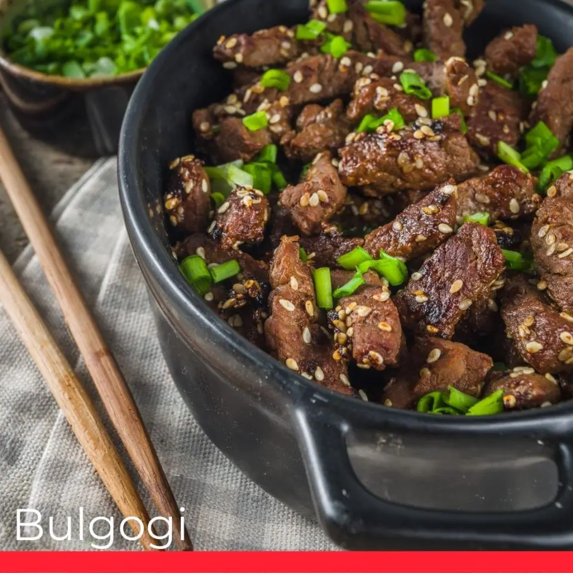

Bulgogi

Directions
Step 1
Whisk soy sauce, green onion, sugar, garlic, sesame seeds, sesame oil, and pepper together in a bowl.
Step 2
Place flank steak slices in a shallow dish. Pour marinade over top. Cover and refrigerate for at least 1 hour or
overnight.
Step 3
Preheat an outdoor grill for high heat, and lightly oil the grate.
Step 4
Quickly grill flank steak slices on the preheated grill until slightly charred and cooked through, 1 to 2 minutes per
side.